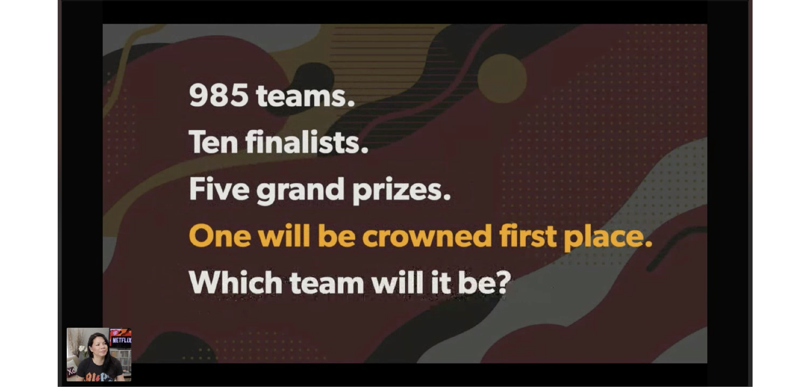
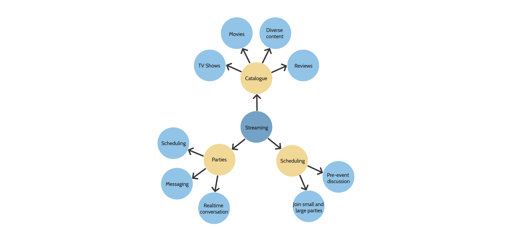

Sharon Chen, Sarah Dang, Cindy San
UI/UX Designer
2 days (Designathon: College + Netflix Creative Jam with Adobe XD)
Adobe XD, Adobe After Effects, Adobe Illustrator
Adobe Creative Jam is an event series where local thought leaders share a behind-the-scenes peek into their processes and projects; meanwhile, teams compete in a tournament that puts their creative skills to the test using Adobe Creative Cloud.
The Netflix Creative Jam is a UX/UI designathon that involves over 2300 students from across the United States, Canada and UK. Given a design brief, we were challenged to design a third-party desktop app which allowed the community to come together and celebrate shared stories together through communal and authentic experiences.
Netflix invests in creating and giving a platform to stories that connect people and cultures from around the world. How might we help families and friends utilize this platform and share their experience with content such as series television shows and movies they love?
Because there are so many components in creating a communal streaming application, we started by creating a mind map to list all the situations we could design for.
We then narrowed them down to the following direction based on impactfulness, uniqueness, and design feasibility under the time constraint.

Click here for prototype!
MovieNite is a desktop application which allows users from around the world to simultaneously connect and chat while streaming a movie, TV show, or short! During times like these, being able to watch and share views and opinions on different television shows and movies with friends and family who are not nearby can be difficult. MovieNite solves this problem by allowing users to communicate in real-time via several different methods - voice call, video call, group call, or even messenger!
With this app, users are encouraged to schedule movie “dates” with family and friends, join community watch parties, learn about new TV shows and movies through the messenger feature, and most importantly share these new experiences with the people who matter to us the most!
1. Endless selection: With several categories of TV shows and movies, users will never face the problem of running out of content to watch. The layout of the homepage and categories allows users to discover new content by ways of metadata, such as new releases, movie star ratings, and running times. Once users find a show they’re interested in, all it takes is one click for them to begin streaming it with family and friends!
2. Schedule watch parties easily: With the Calendar, users are able to schedule what they’re watching and when they’re watching it - movie dates have never been more easy!
3. Stream content with family and friends: Once users have agreed on a movie or television show to watch, they can easily stream content with family and friends remotely. Users are able to engage in real time conversations before, during and even after watching the movie!
This Creative Jam was very rewarding for me and taught me a lot about designing, especially in a collaborative environment. Some things I learnt during this two day UX designathon:
1. Communication is key: In working with two other designers, there are bound to be different skill sets and work styles. In this case, I found it was helpful to always communicate with each other - in this case, stay on call and assign tasks. Through effective communication, we were able to identify and utilize our different individual strengths which in turn allowed us to divide work up equally and efficiently use all the time we had.
2. Time management: With only two days, we had no time to waste. We made sure that everyone had a separate task to do, or made sure each designer was working on a different user flow which not only helped us avoid having two designers working on the same screens simultaneously, but also maximized productivity.
3. Be open and have fun!: We all had different ideas with what we wanted to implement coming into this competition. However, once the competition officially started and we were aware of the short amount of time we had to come up with an idea, we were challenged to be as creative as possible, given the design prompt.